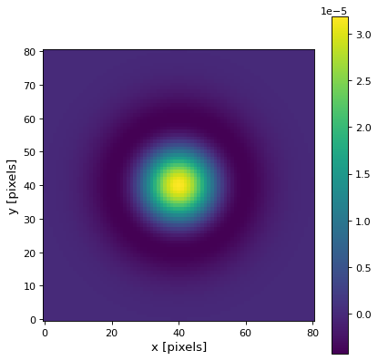
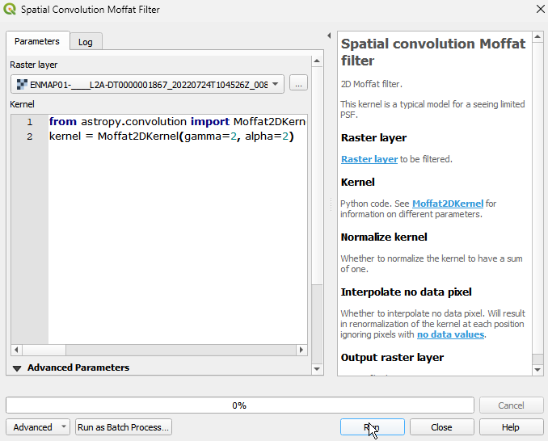
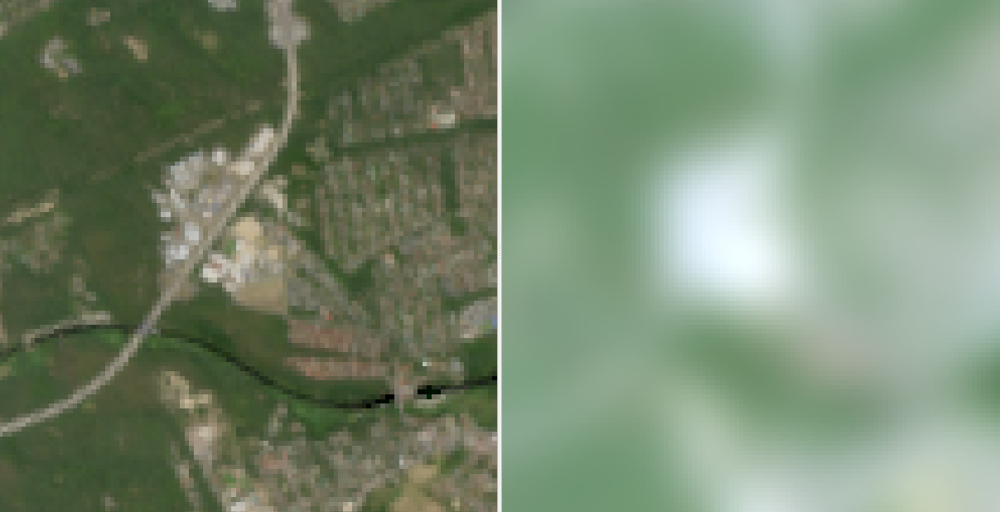

2D Moffat filter. This kernel is a typical model for a seeing limited PSF.
When using a Moffat filter, the image is convolved with a kernel that approximates the Moffat distribution. The convolution operation involves multiplying each pixel in the image with the corresponding weight in the kernel and summing the results to determine the value of the convolved pixel. This kernel is a typical model for a seeing limited PSF. An exemplary kernel can be found below.

Usage:
Start the algorithm from the Processing Toolbox panel.
Select the raster to process and modify the parameterization if necessary, then click :guilabel:`run`.

Processed image in comparison to the original.

Parameters
Raster layer to be filtered.
Python code. See Moffat2DKernel for information on different parameters.
Default:
from astropy.convolution import Moffat2DKernel kernel = Moffat2DKernel(gamma=2, alpha=2)
Whether to normalize the kernel to have a sum of one.
Default: False
Whether to interpolate no data pixel. Will result in renormalization of the kernel at each position ignoring pixels with no data values.
Default: True
Outputs
Raster file destination.
Command-line usage
>qgis_process help enmapbox:SpatialConvolutionMoffatFilter:
----------------
Arguments
----------------
raster: Raster layer
Argument type: raster
Acceptable values:
- Path to a raster layer
kernel: Kernel
Default value: from astropy.convolution import Moffat2DKernel
kernel = Moffat2DKernel(gamma=2, alpha=2)
Argument type: string
Acceptable values:
- String value
- field:FIELD_NAME to use a data defined value taken from the FIELD_NAME field
- expression:SOME EXPRESSION to use a data defined value calculated using a custom QGIS expression
normalize: Normalize kernel
Default value: false
Argument type: boolean
Acceptable values:
- 1 for true/yes
- 0 for false/no
- field:FIELD_NAME to use a data defined value taken from the FIELD_NAME field
- expression:SOME EXPRESSION to use a data defined value calculated using a custom QGIS expression
interpolate: Interpolate no data pixel
Default value: true
Argument type: boolean
Acceptable values:
- 1 for true/yes
- 0 for false/no
- field:FIELD_NAME to use a data defined value taken from the FIELD_NAME field
- expression:SOME EXPRESSION to use a data defined value calculated using a custom QGIS expression
outputRaster: Output raster layer
Argument type: rasterDestination
Acceptable values:
- Path for new raster layer
----------------
Outputs
----------------
outputRaster: <outputRaster>
Output raster layer